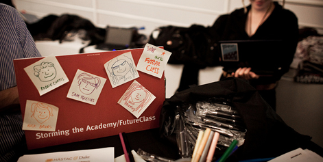
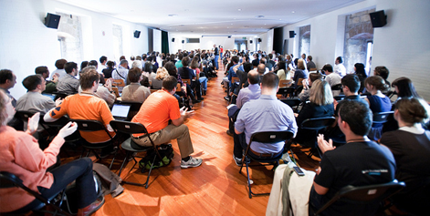

LEARNING x FREEDOM
Learning happens naturally when individuals pursue their passions among peers and guides. Restrictions on learning—red tape, time, place, cost, or others—should be minimized so more people around the world are free to join together to face hard problems and learn new things in new ways.
“Virtually every feature of traditional formal education was created between 1850 and 1919 to support the Industrial Age. The whole basis of assessment is the standard deviation, the invention of Francis Galton! A eugenicist who believed the English poor should be sterilized! We’re stuck with Henry Ford’s assembly line from kindergarten through grad school! But our world has changed! With the Internet we don’t need the same kind of hierarchical structures.”
Storming the Academy
“Joyful insurgency” tactics for creating open, tech-aware learning inside the academy.
What role will traditional educational institutions play in the future of learning? As we call for change, it’s easy to dwell on their limitations, or to brush past them altogether in the eagerness to hack shiny, new alternatives.
This would be a fatal error. As we swing out over uncharted territory, learners continue to need institutions, just as institutions need learners.
At the very least, traditional institutions convene communities of people who love learning—and sign many of their paychecks. The existing schooling infrastructure from kindergarten to state university is a crucial public asset to leverage toward the future of open learning. For a thousand years, at least some learning has taken place inside formal institutions, and it might benefit the future of learning to figure out how free and open learning might emerge from that history. Plus, the best institutions maintain an anarchic and decentralized structure that allows for all kinds of research and innovation to take place—like the early stages of the Internet, for one. Why not take advantage of them to innovate learning itself?
{kind=link}
Laura Hilliger of the Knight Digital Media Center wrote in response to a draft of this work:
Although our universities, colleges and traditionally run schools are outdated and in desperate need of change, they are still institutions of learning, innovation and stimulation. We, the educators and web nerds who make up “Learning, Freedom and the Web,” aren’t looking to destroy the infrastructure we have in place, we’re looking to change how that infrastructure is used. I’m thinking about the innovation that comes from the FREE and OPEN learning within these institutions, like Marie Curie having access to a lab, or, to use an example which both pisses me off and also changed the world, Mark Zuckerberg being inspired by his social surroundings to come up with Facebook. We are going to need that space for our learning revolution.
Making that space is the work, in part, of Cathy Davidson and her network of edge-seeking scholars.
In 2002, I was at a national meeting of directors of humanities institutes around the country and one after another said that the humanities and social sciences were “antithetical to the Information Age,” Davidson explains. “What? The greatest revolution in how humans create and share knowledge, how they read and write, how they communicate and interact in all human history—and there’s no space there for the human and social sciences?”
One other person in the room, David Theo Goldberg, who directs the the system-wide University of California Humanities Research Institute, agreed. We stepped out of the meeting and created HASTAC.
- from www.hastac.org
HASTAC [Humanities, Arts, Science and Technology Advanced Collaboratory). Pronounced “haystack”: it is an international network of educators and digital visionaries committed to the creative development and critical understanding of new technologies in life, learning, and society]
Davidson is famous—sometimes notorious—for her experiments in both pedagogy and research, many of which have the effect of dethroning herself as a teacher that presides at the front of a classroom. For example, she uses “contract grading,” by which students commit to a certain level of work in a class and are also responsible for evaluating peers’ work.
Davidson and members of FutureClass, her “collaborative independent study,” including seven students from Duke University and one from University of North Carolina at Chapel Hill, held court in a tent on the square at the Festival, running it as cross between a graduate seminar and a dorm-room bull session. With sessions such as “Storming the Gradebook” and “Storming the Syllabus,” her team brought a sense of what she likes to call Joyful Insurgency into the hallowed traditions of the academy.
Session Notes:
Storming the Cloud/Crowd
One recurring concern for future learners is how to remake the traditional classroom into a more participatory, lively place. One “Storming the Academy” conversation focused on this topic:
An interactive, collaborative performance and tag cloud activity designed to explore the ethics of the crowd, cross-disciplinary collaboration, and minority expression.
Activity Leader: Anne Balsamo, University of Southern California
Tools: index cards, pens, large sheets of paper, a couple of helpers, a crowd.
Technology is about the way cultures are made. Cultures of the moment, cultures of the future, tinkering (“ways of the hand”). Each member of the audience selects three words that best describe their experience with collaboration. They then pair with someone they don’t know, share their three words, and together pick ONE word that describes a quality of collaboration across difference they feel is important. The sociality reality check!
Words from the crowd: Serendipity, discomfort, introduction, open, confusion, engagement, empathy, and respect.
Imagine an app where what is privileged is the minority voice, not the loud, crowd voice. What about the inverse, or privileging the fringe voice?
The open web isn’t always a level playing field. There are hierarchies and assumptions encoded in the technology (i.e. in a tag cloud). Curation and collection can reiterate dominant opinion.
Balsamo and some FutureClass participants are working on developing tech tools to run better class discussions, like the Classroom Attention Barometer, to allow for real time feedback.

{kind=link}
Session Notes:
21st Century Literacies
If our ideal future state is to help our students be the best possible participants in the free and open web, then what literacies are most important for reaching that goal? What resources are best for understanding and mastering each literacy? What methods are best for teaching/learning?
Attention: What are the new ways that we pay attention in a digital era? How do we need to change our concepts and practices of attention for a new era? How do we learn and practice new forms of attention in a digital age?
Participation: Participation: How do we encourage meaningful interaction and participation? What is its purpose on a cultural, social, or civic level?
Collaboration: Collaboration can simply reconfirm consensus, acting more as peer pressure than a lever to truly original thinking. HASTAC has cultivated the methodology of “collaboration by difference” to inspire meaningful ways of working together.
Network awareness: How we both thrive as creative individuals and understand our contribution within a network of others? How do you gain a sense of what that extended network is and what it can do?
Global Consciousness: How does the World Wide Web change our responsibilities in and to the world we live in?
Civic Responsibility: How can we be good citizens of the Internet when we are off line, working towards real goals in our communities and using the community practices of sharing, customizing, and contributing online towards responsible civic action off line?
Design: How is information conveyed differently, effectively, and beautifully in diverse digital forms? How do we understand and practice the elements of good design as part of our communication and interactive practices?
Narrative, Storytelling: How do narrative elements shape the information we wish to convey, helping it to have force in a world of competing information?
Procedural Literacy: What are the new tactics and strategies of interactive games, where the multimedia narrative forms changes because of our success or failure?
Critical consumption of information: Without a filter (editors, experts, and professionals), much information on the Internet can be inaccurate, deceptive, or inadequate. How do we learn to be critical? What are the standards of credibility?
Digital Divides, Digital Participation: What divisions still remain in digital culture? Who is included and who excluded? How do basic aspects of economics and culture dictate not only who participates in the digital age but how we participate?
Ethics: What are the new moral imperatives of our interconnected age?
Advocacy: How do we turn collaborative, procedural thinking on line into activism in the real world?
Preservation: What are the requirements for preserving the digital world we are creating? Paper lasts. Platforms change.
Sustainability: What are the metrics for sustainability in a world where we live on more kilowatts than ever before? How do we protect the environment in a plugged-in era?
Learning, Unlearning, and Relearning:Alvin Toffler has said that, in the rapidly changing world of the 21st century, the most important skill anyone can have is the ability to stop in one’s tracks, see what isn’t working, and then find ways to unlearn old patterns and relearn how to learn.
We’re going from an industrial age to a digital one/ These ages are nothing compared to how long people have lived/ It’s a flicker/ What really has changed in the grand scheme of things?/ It looks to me more like we’re returning to what has been cultivated as human faculties for millions of years before the industrial revolution/ tribal communicative/ collaborative even if not cooperative/ we can’t help but learn peer to peer it’s automatic and to say that’s not happening is a huge fallacy/ I question that we’re seeing anything new/ we might be seeing something extremely old/ We’re disconnected partly because the Ethnosphere is deterioriating/ Things that are deep down inside of us might be coming out again/ they are terrifying but have always been there.
{kind=link}
No one at the Festival could have missed Cathy Davidson and her FutureClass students, holding a heady nonstop seminar in the white tent next to the Hackbus on the square. Davidson, the founder of HASTAC (The Humanities, Arts, Science, and Technology Advanced Collaborative), nominated to Obama’s National Council on the Humanities, and author of the forthcoming book “Now You See It: How the Brain Science of Attention Will Transform the Way We Live, Work, and Learn.” Davidson has been called “one of the most famous, prolific, and hated academics in the world.”
What is your background and why are you interested in the free sharing and reuse of knowledge?
As a kid, I was math all the way. I assumed I’d go into artificial intelligence and was very excited by computational philology. But there were no women at all in that field and I wanted to support myself so I began to indulge my love of writing and veered into English. But I’ve always written about information technologies and how they change our interactions.
What would you say is your main motivation for working on free and open education?
We’re only beginning to imagine what structures we need to educate students for the 21st century. There are many lessons from open web development that need to be transferred to traditional education.
How does HASTAC work? How many people are participating? What kinds of projects are they working on? What are the goals?
HASTAC is a network of networks. We’re about 4,800 strong now, including nearly 200 undergraduate and graduate students (HASTAC Scholars) from over 70 institutions. We are dedicated to three interconnected goals: creative development of new media and new tools; thinking critically about the role of technology in society, education, and social life; and participatory forms of learning.
What do you think is the relationship between free software and open education? Why is it that so many people who are interested in one, are working on building the other?
If you believe that the best way to develop software is for free, collaboratively, and led by community interests, then you have to question a form of industrial education that is based almost entirely on credentialing, on certifying, on one person granting a degree of excellence to another, rather than in the ways we, collaboratively, demonstrate excellence by performing well.
What are the main obstacles standing in the way of an entirely affordable, accessible, high-quality, and open world of higher education? Are they technological, social, matters of government policy or the conduct and structure of institutions?
Tradition dies hard. Once you establish a hierarchy of what counts as the pinnacle of excellence (with Oxford and Cambridge in England, Harvard in the U.S., Tokyo University in Japan) it is hard for those who have profited within that system of hierarchy to admit that reputation is not always equal to excellence, that esteem does not necessarily lead to innovation. So institutional resistance, deeply nestled within the class system and reward systems, would top the list. There are also billions of dollars resting in the current system, so there is much resistance to major change.
Do you think institutions (like Duke, for example) will largely adapt to the new reality or will educational innovators have to find workarounds?
Every educational innovator strives for major change while also figuring out the workarounds.
Why did you bring eight students to Mozilla Drumbeat Festival?
For HASTAC to have a tent at Drumbeat underscores how many of us in the academy are looking for a new way. We want to be able to show that “thinking" is an activity and that “interaction” can occur with notecards and markers as well as on a computer. We want to be inspired by open universities and open sources of knowledge to push the transformations in higher education and we know there are lessons in excellence to learn from the highest forms of collaborative research and work.
Anything else you’d like to say about the future of education? What will education look like in 2020?
If we do not take stock of the systems of education, K-12 and 12-20, we will not be able to prepare for the future. We need to rethink how we test, how we measure ability and disability, the different ways we can combine talents and collaborate.
I believe that we will have very different forms of testing by 2020, that disciplines will be more merged, that school will be more project-based and more integrated into communities, with less separation of town and gown, of the theoretical and the practical.
One of Davidson’s FutureClass students came away with her own ideas and questions. Jade Davis is a doctoral student in Communication Studies at UNC Chapel Hill. Her research areas of interest focus primarily on issue of identity and how identity is performed and engaged by diasporic populations in digitally mediated spaces. Currently, her focus is on global black populations.
I arrived with one question: How do you imagine the involvement of traditional forms of higher education in the future of Freedom, Learning and the Web? I actually had responses from everyone I spoke with other than “but how are we going to credential” which is not something that has happened yet in academic settings.
Most people there were in agreement that the approach to learning and spaces of learning needs to be more holistic. However, people were still unwilling to completely let go of some of the ideals of industrialized education. They are just re-imagining them and making them more flexible. I would have to do more reflecting and exploring to determine if I think that is a good thing or a bad thing.
After the fest, Cathy Davidson reflected:
The Mozilla mode of learning is doing. Have a problem managing attention? Work on an app for it. Trying to wrangle a 200-person classroom into small affinity groups? Create a tool that facilitates it. Want to authenticate who is writing a productive or a trollish comment or contribute great code but with bad spyware embedded in it? Create a badge system that credentializes not by your degree but by what and how you have contributed to the open web in the past. Want to make all video machine readable, able to grab supplementary material, instantly subtitled into any language you wish? There’s an app for that, too. What about us, here at FutureClass, the collaborative independent study tutorial I’m guiding at Duke, and newly returned from an exhilarating and eye-opening Learning, Freedom and the Web Festival in Barcelona? We’ve been set the challenge to complete some work on the prototype of a classroom attention device that everyone talked about, that one student firestarted with a stunningly subtle idea, and that another, working with a friend not in the class, actually developed independently into an app. Now the Mozilla developers have pledged to help us bring this to full fruition.
That’s a fabulous learning experience by any estimation, but the HASTAC way is to not just create new technologies but to think critically about those technologies—what they mean, how they apply to society or to individual rights and aspirations. It is also important to transform creating and critiquing into pedagogical practice. So I would say that the “development phase” we are in now, post the exhilarations of the Festival, is the truly humbling part of this program.
Contract grading
A method of grading that allows students to determine their own learning goals, while incorporating peer learning and peer assessment, and removing the teacher as the sole point of authority.
Difficulty: Medium.
Time: 3 months.
Who: Many learners; 1 facilitator.
Steps:
1. Lay out all the requirements of a course: assignments, class participation, blogging, etc.
2. Successful completion of all course requirements is an automatic A. Students who have other obligations during the term and don’t need an A can choose to do less work to earn a B or C grade.
3. Have students sign contracts committing to a particular grade, with consequences spelled out. No matter what level of grade contracted for, missing assignments or unsatisfactory completion lead to automatic grade penalties.
4. Each week, have two student leaders make specific reading and production (writing or multimedia) assignments, read assignments, and assess the students’ contributions, setting (and discussing) what constitutes satisfactory work and also working to improve contributions if they are not satisfactory.
5. The next week, those two student leaders are back in the class, producing work that the next two student leaders read, assess, give feedback on.
{kind=link}
As a professor at Seneca College in Toronto and an “educational liason” for Mozilla, David Humphrey helps beginning programming students learn by participating in Mozilla and their open-source software development. This means he’s living the complexities of learning, freedom, and the web like few others. “It’s not that my students are the smartest in the world; it’s that I believe they can do great things. I put them in an environment where they can see others doing it, and they do,” he says. At the Festival, he spent most of his time up on the third floor, sequestered in the Video Lab, making one of the most productive collaborations at the fest happen.
What is your background and why are you interested in open education, free sharing and reuse of knowledge?
I am a professor specializing in software development, and in particular Mozilla and the open web. I’m interested in open education and the free sharing of knowledge from a philosophical point of view.
Can you describe Seneca’s work with Mozilla Foundation? What kinds of projects are they working on? What are the goals?
I have been an active contributor to the Mozilla project for six years, and have brought hundreds of students with me into Mozilla. I teach students how to work on something as large and complicated as Firefox, and also how to cope in a community like Mozilla. My students work on everything Mozilla does. I try to let students work on (and discover) their passions through Mozilla versus having them all work in one area.
How do you assess work within a collaborative setting such as building open source software? How do you ready students to work independently on real-world projects and to seek help?
I grade things like blog posts, bugzilla involvement, IRC [chat room] involvement, etc. And instead of just marking the finished product, I grade the process as much or more. In open source, the code evolves little bit by little bit, and if you’re willing to mark that slow evolution on a regular basis, it’s pretty easy to do assessments.
I throw students into a real project before they are ready, then teach them the skills they need as they need them. If I just taught them the theory of open source, they would never have the need for much of it. But by having them engage early, they are hungry for knowledge, introductions to people, etc.
Also, I use my personal connections at Mozilla to find mentors and get people to help my students. The reason this works in an ongoing way is that I also get my students to help these people. It has to be two-way or the open source community will tire quickly.
What do you think is the relationship between free, and/or open-source software and open education? Why is it that so many people who are interested in one, are working on building the other?
Open source is built on community, and in particular, on communities of people who help each other. They teach each other, help each other fix things, extend each other’s work. Every one of us working on a project like Mozilla is dependent on others to help us understand things in the code that we don’t know. The free exchange of knowledge is how open source works, and how the Internet works. It’s natural that people who do this all day long will become interested in teaching and education, since much of their work is about engaging new contributors and helping existing ones. The key to succeeding here is to make your students look like new contributors—then the open source community knows what to do with them.
What would you tell other colleges that are interested in incorporating programs like those at Seneca?
You have to become an active member in an open source community for this to work. Unless you have connections and knowledge yourself, you can’t do this.
What are the main obstacles standing in the way of an entirely free and open world of education? Are they technological, social, matters of government policy or the conduct and structure of institutions?
The institutional approach to education is dehumanizing in its desire to deal with grades versus people. I am heavily influenced by the ideas of Ivan Illich here, and believe that open source in the classroom is one way to step outside (literally) the institution and into a world of real people and real collaboration.
When all our work for students is canned, and when everything is rated in terms of grades, we miss so much of the richness of real learning, which relies on failure, trial and error, getting to know people, and reaching for things you didn’t think were possible.
Do you think institutions will adapt to the new reality or will educational innovators have to find workarounds/build new kinds of institutions?
I think the school as such will fade. As a professor working on and with Mozilla, I could do my work from anywhere in the world, and I could be teaching students from anywhere. I’ve helped students in Spain, France, Japan, Australia, all over the U.S. and Canada, England, India, and a dozen other countries. It didn’t matter that we were in different locations, or at different schools. Projects like Mozilla cut across educational institutional boundaries.
Anything else you’d like to say about the future of education? What will education look like in 2020?
I hope that the approach I’ve adopted will become less of a novelty and more the way many people work. I also hope to be engaged with more students outside my own institution. I’d like to teach from my basement by 2020. :)
{kind=link}
Ismael Peña-López teaches at the Open University of Catalonia, a virtual university based in the region surrounding Barcelona, and maintains an insightful and incredibly lucid blog about the “de-institutional-ization of education” at ictology.net. He has a solemn, sleepy demeanor that breaks easily into laughter.
“Digital technologies in knowledge-intensive areas (such as teaching and learning) have cut down to the minimum the cost of building, testing, trying, simulating, of being wrong.”
Tell me about the Open University of Catalonia.
We started in 1994. It’s like the U.K.’s Open University, fully virtual. The founding president didn’t want to have all the binds and structures of a traditional university. So what he created is a tiny core of people. In our case it’s 200 professors for 50,000 students—these are coordinators of subjects. We create the syllabus, teaching materials, design what’s going to happen in the four months of the semester. And then there are 2,000 to 2,500 teaching assistants—these are online mentors who enter the classroom. If we have something synchronous or in-person, it’s not compulsory and it’s mandatory that an abstract or a video is put online. On our Microweb you can find all the books as HTML PDFs. Now that people are getting more DSL we have video, audio, multimedia.
So how is this model doing?
It’s growing, popular—but people are threatened by the popularity of e-learning. The president of the university was a visionary man: he began from scratch. No faculties—no people trying to get small kingdoms for themselves. We created a cooperative so students could buy their own computers.At first, there was a lot of reluctance. It was understandable: We were very new, very different.
By 2000, e-learning had become more normalized and so we had some pressure to offer Spanish courses [rather than just Catalan, the regional language], which are now available.
So how do the fees work out, and how about the actual costs?
It works out to 400 to 700 euros a semester for Catalan courses. For courses in Spanish, it’s three to four times more because the Catalan government won’t subsidize teaching in Spanish.
As far as the costs, we have a much lower payroll than a traditional institution. We charge the students the same, but the government subsidizes us at 40 to 50 percent. For a normal university they pay 75 to 80 percent.
And who are the students?
For 15 years we had the profile of any other Open U—Netherlands, U.K. Dropouts, people who want to study for the sake of it, 98 percent are working, 70 percent have a partner and a kid. My former president used to say we were the most successful university in the world in having students working—because they already had the job when they came in!
But that’s changed?
Just now, in the last semester, 25 percent of new students came directly from high school. That’s really new. The average before was like one percent—people who wanted to study something like multimedia, which wasn’t being offered anywhere else. Our average age has dropped from 45 to 35.
Wow! Why do you think that is?
One reason is this digital next generation. They have lives online so why not study online? It’s much cheaper. They don’t have to commute or rent a flat. They can study and work at the same time.
Tell me about your interest in free software and open education.
Along with my students, I started an E-learning for Development nonprofit. We use free people (volunteers), free software (our learning platform), and free content—to teach either NGOs or people who are in developing countries like Morocco or post-conflict countries like Bosnia-Herzegovina. We have all kinds of courses like human development, economics, web development. We can do lots of things for free. We need lots of ways to circumvent the huge structure that’s normally very slow in adapting.
My research is also about the digital divide or e-empowerment, e-poverty. It’s a big thing that is interrelated. If you can change the transmission of knowledge, that’s one of the huge axes of development. ICTs (information and communication technologies) can empower people to get their own food, their own health, why not their own learning? ICT is about decentralization and bringing the knowledge back to the people.
So it’s really about justice for you. And it changes teaching and learning practice too, right?
Yes. The teacher becomes a mentor—engaging and monitoring, curating more than just concentrating the knowledge. We can transform education into learning instead of teaching. We have lots of possibilities—why stick to old ways of lecturing? The university has proved that a switch is possible but not a huge transformation of the whole system.
People normally think that face-to-face is rich because you can engage in a conversation with peers and your teacher/savior. You can talk, you can reflect. They are thinking about the Greeks and Aristotle and those disciples going around the cloister. This is only true for good learning, which happens .00001% of the time—maybe at a posh Harvard seminar for 12 graduate students. One of the things we did well in the industrial revolution was to democratize access to knowledge and education. But the tradeoff was about personalization and being able to monitor people very closely.
Online learning is doing very well in that. I have dialogue with my students. On chat boards they can contribute without having to raise their hand. There’s no time constraint—we’re not rushing off because class is finishing. With all the materials online, you can customize the experience to the max. The only thing that’s blocked in e-learning is this sense of humanity, where I get to look you in the eyes.
So how do you overcome that?
I like the blended classroom where people work a lot at home with lots of access and interaction, a rich and intensive debate, and they just meet face-to-face once a week or once a day, to check that people are people and are able to access the social part of the learning. At the same time, we have such rich experiences online with streaming video conference and Twitter. It’s a tradeoff—if I have to spend two days to go to my campus to meet people, it means during these two days that I’m missing out on this ongoing conversation taking place online.
I’d rather have Wi-Fi without the conference than a conference without Wi-Fi. I’d rather have no human contact but rich contact with all the people online.
Wow. That’s a bold statement.
I’ve taught face-to-face and online. I like the adrenaline of teaching offline. I used to gig with a sax so I’m a stage animal. But I find that I get closer to the students online. I can stretch them and force them to think more.
So what do you think will happen in European education, with all these budget pressures and things like the Bologna process? [Starting with the Bologna Declaration of 1999, the Bologna process is a broad reform effort to streamline and integrate the higher education systems of 29 EU countries.]
I think the Bologna process is a good step, even if it’s got a lot of opposition from the students. We’re ringing alarms about 24 percent of our students being 18. Why should they have to commute an hour to Barcelona to listen to a boring guy, go home, ask somebody for the notes, and end up looking it up on Wikipedia? Maybe this will push face-to-face, not to go online, but to have richer learning experiences.